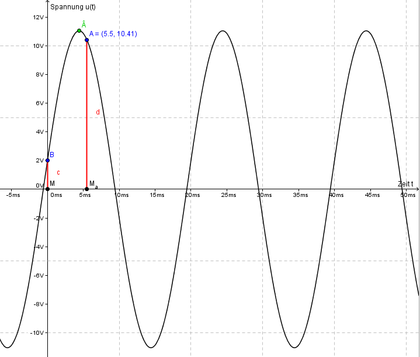

Mit Û wird der Scheitelwert eines Signals bezeichnet. Es bezeichnet den Höchstwert des Signals. ω bezeichnet die Kreisfrequenz. Sie lässt sich mit \( \frac{2 \pi}{T} \) berechnen, wobei \( T \) die Dauer einer Schwing ist. Hier beträgt \( T = 20\) ms. Daraus ergibt sich \( \omega = \frac{2 \pi}{20 ms} = \frac{\pi}{10} = 0,1 \pi \). φ ist der Phasenwinkel.
\[ \begin{align*} u(t) &= Û \cdot \sin(\omega t + \varphi_0)\\ u(t = 0 ms) = 2 V &= Û \cdot \sin(0ms \cdot \omega + \varphi_0)\\ u(t = 5,5 ms) = 10,41 V &= Û \cdot \sin(5,5ms \cdot \omega + \varphi_0)\\ \\ \Rightarrow Û &= \frac{2 V}{\sin(\varphi_0)} = \frac{10,41 V}{\sin(\omega t + \varphi_0)}\\ \Rightarrow 10,41 V &= \frac{2 V \cdot \sin(\omega t + \varphi_0)}{\sin(\varphi_0)}\\ \Rightarrow \frac{10,41 V}{2 V} &= \frac{\sin(\omega t + \varphi_0)}{\sin(\varphi_0)}\\ \\ \text{Mit dem Additionstheorem}&\text{ können wir nun den Term } \sin(\omega t + \varphi_0) \text{ aufspalten:}\\ \\ \frac{10,41 V}{2 V} &= \frac{\sin(\omega t)\cos(\varphi_0) + \cos(\omega t)\sin(\varphi_0) }{\sin(\varphi_0)}\\ \frac{10,41 V}{2 V} &= \frac{\sin(\omega t)\cos(\varphi_0) }{\sin(\varphi_0)} + \frac{\cos(\omega t)\sin(\varphi_0) }{\sin(\varphi_0)}\\ \frac{10,41 V}{2 V} &= \frac{\sin(\omega t)\cos(\varphi_0) }{\sin(\varphi_0)} + \cos(\omega t)\\ \Rightarrow \frac{10,41 V}{2 V} - \cos(\omega t) &= \frac{\sin(\omega t)\cos(\varphi_0) }{\sin(\varphi_0)}\\ \Rightarrow \frac{\frac{10,41 V}{2 V} - \cos(\omega t)}{\sin(\omega t)} &= \frac{\cos(\varphi_0) }{\sin(\varphi_0)}\\ \\ \frac{\cos(\alpha)}{\sin(\alpha)} = \cot(\alpha) \\ \\ \Rightarrow \frac{\frac{10,41 V}{2 V} - \cos(\omega t)}{\sin(\omega t)} &= \cot(\varphi_0)\\ \Rightarrow \cot^{-1}\left(\frac{\frac{10,41 V}{2 V} - \cos(\omega t)}{\sin(\omega t)}\right) &= \varphi_0\\ \varphi_0 &= \cot^{-1}\left(\frac{\frac{10,41 V}{2 V} - \cos(0,55 \cdot \pi)}{\sin(0,55 \cdot \pi)}\right)\\ \varphi_0 &= 0,18217835416669\\ \\ \\ \\ Û &= \frac{2 V}{sin(0,18217835416669)}\\ \\ Û &= 11.039214731224763 V \\ \\ Û &= \frac{10,41 V}{\sin(0,55 \cdot \pi + 0,18217835416669)}\\ \\ Û &= 11.039214731224763 V \\ \\ \\ \\ \Rightarrow u(t) &= 11.039214731224763 V \cdot \sin(0.1\pi \cdot t + 0,18217835416669) \end{align*} \] Geplottet mit Geogebra
Die Amplitude der resultierenden Schwingung lässt sich mit der Formel \[ A_{res} = \sqrt{ A_{1}^{2} + A_{2}^{2} + 2 \cdot A_1 \cdot A_2 \cdot \cos(\varphi_{2} - \varphi_{1}) } \] berechen. Wir müssen also den Sinus in den Kosinus umwandeln. \[ \begin{align*} u_{1}(t) &= 100 V \cdot \sin(\omega \cdot t) \\ &= 100 V \cdot \cos\left(\omega \cdot t - \frac{\pi}{2}\right) \\ \\ u_{2}(t) &= 40 V \cdot \sin\left(\omega \cdot t + \frac{\pi}{3}\right)\\ &= 40 V \cdot \cos\left(\omega \cdot t + \frac{\pi}{3} - \frac{\pi}{2}\right)\\ &= 40 V \cdot \cos\left(\omega \cdot t - \frac{\pi}{6}\right) \end{align*} \] Jetzt alles in die obige Formel einfügen: \[ \begin{align*} A_{res} &= \sqrt{ 100^{2} V^2 + 40^{2} V^2 + 2 \cdot 100 V \cdot 40 V \cdot \cos\left(\left(-\frac{\pi}{6}\right) - \left(-\frac{\pi}{2}\right)\right)}\\ A_{res} &= \sqrt{ 10000 V^2 + 1600 V^2 + 8000 V^2 \cdot \cos\left(\frac{\pi}{3}\right)} \\ A_{res} &= \sqrt{ 11600 V^2 + 8000 V^2 \cdot \cos\left(\frac{\pi}{3}\right)} \\ A_{res} &= 20 \cdot \sqrt{39}V \approx 124,899959968 V \end{align*} \] Da es sich hier um Schwingungen gleicher Frequenz handelt benutzenden wir für den Phasenwinkel die Formel \[ \begin{align*} \varphi_{res} &= \arctan\left(\frac{A_1 \cdot \sin(\varphi_1) + A_2 \cdot \sin(\varphi_2)}{A_1 \cdot \cos(\varphi_1) + A_2 \cdot \cos(\varphi_2)}\right)\\ \varphi_{res} &= \arctan\left(\frac{100 V \cdot \sin(0) + 40 V \cdot \sin\left(\frac{\pi}{3}\right)}{100 V \cdot \cos(0) + 40 V \cdot \cos\left(\frac{\pi}{3}\right)}\right)\\ \varphi_{res} &= \arctan\left(\frac{40 V \cdot \sin\left(\frac{\pi}{3}\right)}{100 V + 40 V \cdot \cos\left(\frac{\pi}{3}\right)}\right)\\ \varphi_{res} &= \arctan\left(\frac{40 V \cdot \frac{ \sqrt{3}}{2}}{100 V + 40 V \cdot \frac{1}{2}}\right)\\ \varphi_{res} &= \arctan\left(\frac{20 V \cdot \sqrt{3} }{120 V }\right)\\ \varphi_{res} &= \arctan\left(\frac{\sqrt{3} }{6}\right)\\ \varphi_{res} &\approx 0,281034901503 \end{align*} \] Daraus ergibts sich: \[ \begin{align*} u_{res}(t) &= A_{res} \cdot \sin( \omega \cdot t + \varphi_{res} )\\ u_{res}(t) &= 20 \cdot \sqrt{39}V \cdot \sin\left( \omega \cdot t + \arctan\left(\frac{\sqrt{3}}{6}\right)\right)\\ u_{res}(t) &= 124,899959968 V \cdot \sin\left( \omega \cdot t + 0,281034901503)\right)\\ \end{align*} \]
(Quellen: Uni Franfurt - Elearning Physik, Uni Freiburg - Einführung in die Physik I)
Geplottet mit Geogebra
In der Physik werden häufig Zeigerdiagramme eingesetzt, vorallem in den Teilbereichen der Physik, die mit Schwingungen zu tun haben. Dazu gehört u.a. die Wechselstromlehre. In einem Zeigerdiagramm kann man das Verhältnis des Phasenwinkels zu der dazugehörenden Spannung oder Stromstärke betrachten.
Das Zeigerdiagramm lässt sich auch gut in der komplexen Ebene darstellen. Dabei wird auf der y-Achse der Imaginärteil und auf der x-Achse der Realteil abgetragen.
(Quellen: de.wikipedia.org - Zeigermodell)